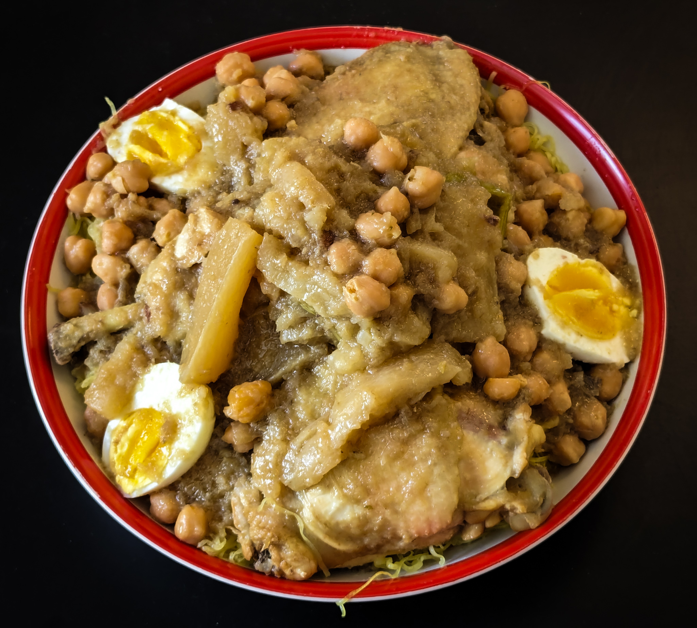

Chakhchoukha

Ingrédients
- 4 œufs
- 4 tomates bien mûres (ou 1 boîte de tomates concassées)
- 2 poivrons verts
- 1 oignon
- 2 gousses d’ail
- 2 c. à soupe d’huile d’olive
- 1 c. à café de paprika
- 1/2 c. à café de cumin
- Sel, poivre
- Persil frais (pour la déco)
Ustensiles
- Une grande poêle ou sauteuse
- Une cuillère en bois
- Un couteau et une planche à découper
Étapes
- Préparation des légumes :
- Une grande poêle ou sauteuse
- Une cuillère en bois
- Un couteau et une planche à découper
- Cuisson des légumes :
- Fais chauffer l’huile d’olive dans la poêle.
- Ajoute l’oignon et l’ail, fais revenir 2-3 min.
- Ajoute les poivrons, fais revenir 5 min.
- Ajoute les tomates, le paprika, le cumin, le sel et le poivre.
- Laisse mijoter à feu moyen 15-20 min jusqu’à ce que les légumes soient fondants.
- Ajout des œufs :
- Creuse 4 petits puits dans la préparation.
- Casse un œuf dans chaque puits.
- Couvre et laisse cuire 5 à 7 min selon la cuisson désirée des œufs.
- Finition :
- Parsème de persil frais haché.
- Sers chaud avec du pain frais ou de la galette.